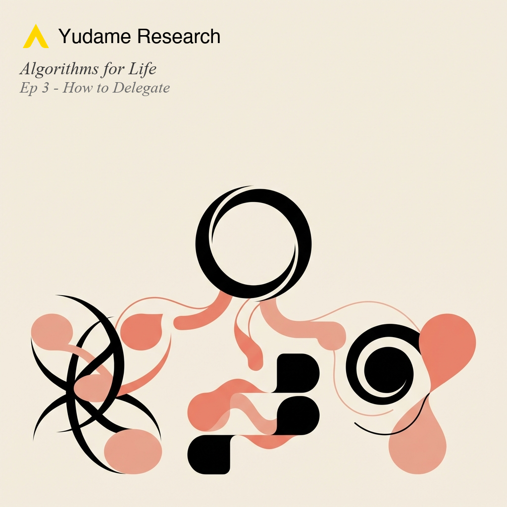

Algorithms for Life
What computer science teaches us about human decision-making, from memory and communication to strategy and game theory.
Episodes
Despite 140 years of research showing 74% better retention than cramming, only 0.1% of Duolingo's 500 million users complete a course. Why does a technique with molecular proof collapse when it meets real behavior?
More
Explores the molecular biology of memory: CREB protein as the switch determining temporary vs. lasting memory, fruit fly experiments showing 7-day vs. 3-day retention from identical training with different spacing. Covers the algorithmic evolution from Wozniak's 1985 SM-0 to modern FSRS with 21 trainable parameters. Details the Cepeda meta-analysis of 839 assessments. Investigates why learners with 20,000+ reviewed cards struggle with basic conversation. Reveals that sophisticated algorithms produce only ~3% better outcomes than fixed intervals.
The same brain architecture that enables breakthrough strategic vision systematically undermines sustained execution. A 2024 meta-analysis found human-AI collaboration often performs worse than either alone—yet for creative tasks, the relationship reverses.
More
Explores why visionary, possibility-oriented thinkers struggle with long-horizon strategy despite strong creative output. Covers the neurobiology of novelty-seeking, attention residue from context switching (20% capacity loss, 20+ min recovery), and working memory limits of 4-7 items. Details implementation intentions research (d = 0.65 effect size) as the highest-leverage intervention. Examines effectuation theory from expert entrepreneurs who use control over prediction. Presents the "2-3 concurrent projects maximum" rule and minimum viable structure protocols for AI-assisted strategic planning.

The 70% rule says if someone can do it 70% as well as you, delegate it. But 66-90% of leadership studies fail basic causal standards, and cross-cultural research shows empowerment backfires in high power-distance cultures.
More
Explores the evidence-based science of delegation through the lens of algorithms. Covers the OPPTY framework for task selection, the founder bottleneck problem (Brian Chesky's Airbnb pivot to "founder mode"), and why learning agility predicts delegation success better than current skill. Examines cross-cultural empowerment reversal studies, structured interviews for coachability, cognitive apprenticeship models, and what AI delegation patterns reveal about human trust calibration.
Ep 4
How to Communicate
What TCP/IP, packet switching, and congestion control teach us about human communication, information flow, and social network design.
Ep 5
When to Scout, When to Settle
The 37% rule meets multi-armed bandits — when to stop searching and commit, when to try something new vs. stick with what works, and what 4X strategy games reveal about both.
Ep 6
Letting Go
How mathematicians solve impossible problems by loosening constraints, and when random approaches outperform careful deliberation — two counterintuitive strategies for better decisions.
Ep 7
Thinking Clearly
Bayes's Rule tells you how to update beliefs with evidence. Overfitting warns you when to stop. Together they define the boundaries of good thinking.
Ep 8
The Art of Organization
Why sorting is expensive and sometimes not worth it, how memory hierarchies explain why forgetting is a feature, and when perfect organization is worse than good enough.
Ep 9
What to Do First
Earliest deadline first, shortest job first, priority inversion, and thrashing — what scheduling algorithms reveal about why you feel perpetually behind despite working constantly.
Ep 10
The Final Move
Nash equilibrium, mechanism design, the price of anarchy, and tit-for-tat — when other minds enter the equation, all the previous algorithms must be reconsidered.